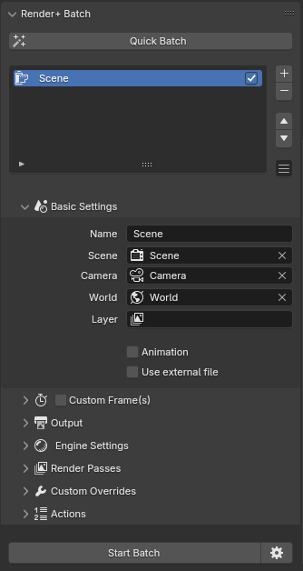
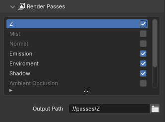
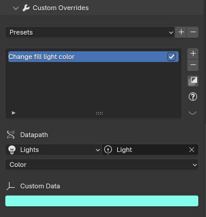
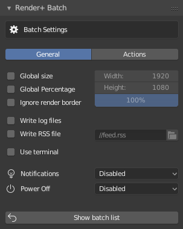
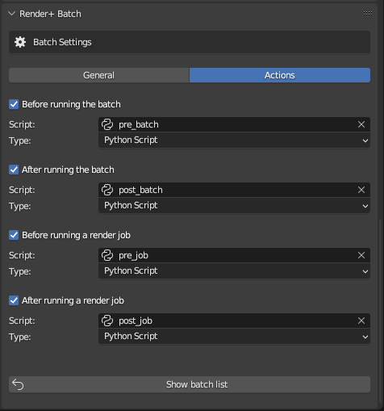

Batch Renders¶

Batches let you run multiple renders in a sequence automatically. These render jobs can use different scenes and settings that override the ones set in the scene.
Simply add and setup some render jobs, then click the Start Batch
button to run the batch.
Step-by-step Workflow¶
Start by adding a new render job (click the + button in the batch panel)
Give it a name by changing the
nameproperty or double-clicking it’s name in the listSelect a scene to render, if you leave it blank it will use the current one
Optionally select a camera or specific view layer to use
Set an output path for your job. This path must be different from other jobs, if you leave it blank the path set in the output panel will be used. Remember you can’t have two jobs with the same path though.
Optionally set custom overrides for the job. See the
Custom Overridessection to learn more.Repeat for each render job you want to include
Optionally set batch settings by clicking the triangle icon next to the start button
Click the
Start batchbutton to start the batch renderingKick back and relax :)
Render+ will switch to “Running Mode”. In this mode the job currently rendering will be automatically selected in the list and you will be able to see it’s progress and status below. You can click the X button to cancel that specific render job.
When the batch is finished the title of the panel will change to “Finished”. You can then select jobs again and check their finished and render times. When you want to go back to normal click the “close” button.
Under the hood¶
Render+ uses a small python application in the background called the Batch Server to manage renderjobs. The batch server communicates with the Render+ addon through a port via http. The addon takes care of starting the server, starting the batch, querying it’s status, and shutting down the server once the batch is done.
The batch server is queried every 2 seconds (by default) when running a batch. You can change this via the preferences.
Render+ uses the port 7777 by default. If you are having trouble starting batches, make sure you are not running another program that uses that port at the same time. You can also change the port number in the addon preferences.
Render job tabs¶
Scene Tab¶
Setting |
Description |
|---|---|
Name |
An identifier for this render job |
Scene |
Scene to use |
Camera |
Camera to use (leave blank to use the current active camera) |
World |
World to use (leave blank to use the current active world) |
View Layer |
Use only a specific view layer (leave blank to use all enabled) |
Animation |
Render an animation instead of a still image |
Custom Frame(s) |
Render a specific frame (for stills) |
Frame Range |
Render a specific frame range (for animations) |
Frame Jump |
How many frames to jump ahead when rendering an animation |
Run pre-render script |
Run a python script in the blendfile before rendering |
Use External |
Use an external blend file |
Blend File |
File path of the blend file to use for this job (when using external) |
Note that custom frames accepts multiple comma-separated frames like this “1,2,6,7”. It also accepts frames relative to the start and end of the frame range like this: “+2, -1”. You can also input frame ranges, which will be rendered as animations like this “2..10, 15..30”. This will render frames 2 to 10, and frames 15 to 30.
Render tab¶
Setting |
Description |
|---|---|
Output |
File path to save to |
Custom Size |
Image Size for this job in pixels |
File Format |
Image/Video format to use |
Samples |
Use a different number of samples to render (Cycles only) |
Render Device |
Render using the CPU, a GPU or both (Cycles only) |
Render Section |
Render only a part of the image |
Threads |
Use a specific number of CPU threads |
Use Turbo Tools |
Use the Turbo Tools addon to render |
Some file formats may not be compiled in your version of Blender. Render+ will tell you when you select one of them.
If you set samples or threads to 0, Render+ will use the
settings you have set in the scene. The same applies if you set
Render Device to “Default”.
If you select “Single GPU” for Render Device you will have a second
menu to select which GPU to use. GPUs are detected when Blender starts.
If you are rendering over a network you will have a number instead, since
Render+ can’t detect the GPUs from the server. To find out the GPUs available
in the server you can use the --list-gpus parameter. Refer to this
page for more info.
You can also choose “Use all devices” to use all CPUs and GPUs for rendering.
Below the output setting you will also find the Show output folder
button. Clicking this button will open the folder where the rendered
image will be saved. Note this option isn’t available when rendering over
the network.
Render+ will also ask you to avoid Blender relative paths when rendering over a network. These are paths that start with “//”. If you use this kind of paths your render files might end up in a temporary folder in the server.
Toggling Render Section will show the coordinates of the section, as
well as the Get from Viewport button. If you have a border render
set (:kbd:Ctrl+B in camera view), you can get it’s coordinates
automatically by clicking that button.
The Use turbo tools checkbox allows you to use the Turbo Tools addon to render. This toggle will only be enabled if the addon is installed and enabled. Enabling this setting is the same as enabling Turbo Tools from the render properties panel, though only for a particular render job. Render+ will respect whatever path you set for the cache in the Turbo Tools panel while adding the render job name and index at the end. If no folder is specified, Render+ will set one up in the OS temporary folder.
Render Passes¶
The render passes panel lets you enable or disable the different render passes available for each render engine. Render+ will always render the full image (also known as the “Beauty Pass”). With this panel you can also render out different passes to other paths.
Toggling passes here will make Render+ create a temporary node group in the compositor that takes the render pass and plugs it into a file output node.
This change is only for rendering and isn’t saved to blend files.

Custom Overrides¶

With custom overrides you can change the value of any property in the scene.
Custom Overrides are used to change specific things for a render job, like color management settings, rig properties, enabling/disabling lights and more.
Click the + button to add a custom override and the - button to
remove it. Clicking on the name of a Custom Override lets you change it,
while toggling the checkbox next to them disables/enables them (just
like in the render jobs list).
Below the new and remove buttons you will find the copy button.
Clicking Copy will copy the data value to all render jobs, while
adding the override to those that don’t have it. You can use this button
to quickly set an override for the entire batch (for instance, setting a
custom cycles sampling value).
Custom overrides also support user presets, so you can save useful overrides for quick access. Render+ comes with 4 example overrides to get you started.
When you’ve created a new override, you need to set a datapath. This is the path to where the data is stored in the blend file. Render+ lets you pick this from a UI or type it manually.
You can select from objects, cameras, lights or collections. Each one of these will change the picker next to it, so you can select a specific object, camera, etc.
After selecting the target (object, light, etc.) you can pick the property that will be overriden. Render+ gives you a dropdown with several common properties to choose. For other properties pick the “Custom” option and type the name of the property.
Once the property is selected just change the value using the controls below the “Custom Data” title. If you picked “Custom” you will have to type that as well.
Custom Overrides are implemented by creating custom Python scripts before rendering. Click the eye icon to see a preview of the Python code that will be generated for each override.
Note that Render+ doesn’t check for value types or valid ranges, double check your data is valid! Also, don’t forget to add quotes to your strings (eg. “my_string”)
More on Datapaths¶
All properties in Blender are organized in different modules and
objects. Properties inside objects can be accessed with the dot syntax
like so, bpy.module.object.property. Properties can be objects, or
collections of objects and properties.
For an in-depth explanation and examples check the [Blender documentation] (https://docs.blender.org/api/current/info_api_reference.html)
Data paths relative to scene settings start with bpy.context.scene.
To get any property in the scene
You can right-click on any property and select Copy Data Path. You can
then go into the data path input and paste it there (Ctrl+v).
If the property comes from an object in the scene, you’ll have
to use bpy.data.objects[OBJECT_NAME] before the path. Change
OBJECT_NAME to the name of the object you’re getting the property
from.
Custom Override examples¶
bpy.context.scene.render.engine = ‘CYCLES’
Set render engine to Cycles
bpy.data.objects[‘Lamp’].hide_render = True
Hide object called “Lamp” for render
bpy.data.objects[‘Cube’].material_slots[‘Material’].material =
bpy.data.materials[‘New_mat’]
Set “New_mat” as material for “Cube” object
Global Settings¶

Global settings are options that affect the batch or all the render jobs
in it. To see the settings click the gear icon next to
Start Batch.
Setting |
Description |
|---|---|
Global Size |
Set a single size for all render jobs |
Global Percentage |
Set a size percentage for all render jobs |
Ignore Render Border |
Check to disable the render border setting for all jobs. |
Overwrite |
Overwrite existing render files or skip them |
Parallel Renders |
Number of render jobs to run at the same time |
Write log Files |
Write a log file for each job. If disabled, output will go into the terminal. |
Use RSS |
Check to generate RSS feed |
Disable addons |
Disable addons when rendering the batch. Useful for troubleshooting |
Use Terminal |
Run the batch inside a terminal |
Power Off |
Suspend or shutdown the computer when the batch is done |
Notifications |
Notify using the desktop, a sound or email |
Log files are stored in the same folder as the rendered files. They are named “[OUTPUT_name]_log.txt“.
Global Size will ignore size percentages (set in the dimensions panel) and use the same size for all jobs.
The Terminal used for the Batch can be customized in the addon preferences.
The notifications system is the same as for single renders. Check out the notifications section in Main settings for more info.
Actions¶

The actions tab lets you setup commands or Python scripts to run: - Before the batch starts - After the batch finishes - Before every render job starts - After every render job completes
Note that the Python scripts are run in a separate instance of Blender. Also the current blendfile (used for the batch) is passed so you can run scripts on it.
If you would like to change some basic properties I would recommend using Custom Overrides. However if you need more complex changes or operations on the file, don’t forget to call bpy.ops.wm.save_mainfile() to save.
RSS¶
RSS is a format used to publish updates on dynamic content like blogs or podcasts. A RSS document is often called a “feed” or “channel”. These feeds can be read using web browsers, web sites, desktop applications, mobile apps and more.
Render+ can generate RSS feeds with information about running batches. You can use these feeds to monitor progress of any number of batches remotely.
To enable it first click the gear button next to the “Start Batch” button to see the global settings. Then check the “Use RSS” checkbox. The RSS feed will available at batch/rss. If you are running the server locally with the default port, then it would be in http://localhost:7777/batch/rss.
Render+ includes an item for each render job with information about it. The very first item in the list is a summary of the progress of the batch.
If you’re into customizing your desktop you could use an application like Geektool (Mac) or Conky (Linux) to show the RSS feed right over your wallpaper. KDE (Linux) also has support widgets to show RSS feeds.
For a (long) list of RSS readers check Wikipedia
External Render Jobs¶
External render jobs render scenes from other blend files. They are marked with a file icon in the batch list. You can make any render job use an external blend file by toggling the “use external” checkbox.
You can leave the output path blank in external jobs, Render+ will use the output from the blend file. This way you can set different paths in each blend file, and then have the batch process use them automatically.
You can also select multiple blend files and create render jobs for them automatically by using the “Add External Blends” option in the batch menu.
Scripting¶
You may be interested in scripting to extend R+ to fit your own needs
better. You can find everything batch related in
bpy.context.scene.renderplus.batch. These are the properties
contained in it:
Property |
Description |
|---|---|
jobs |
List of render jobs |
index |
Int, Index of the currently selected job in the ui |
use_rss |
Boolean, True to write a RSS file |
rss_path |
String, Filepath for RSS file |
write_logs |
Boolean, True to write log files |
use_global_size |
Boolean, True to force a specific size |
global_size_x |
Int, horizontal global size in pixels |
global_size_y |
Int, vertical global size in pixels |
ignore_border |
Boolean, True to disable render border |
Each job in the list contains the following properties:
name
scene
layer
camera
enabled
size_custom
size_x
size_y
animation
frame_custom
frame_still
frame_start
frame_end
output
use_external
blend_file (only set if use_external is True)
overrides
Animation, size_custom and frame_custom are booleans used to
enable or disable settings.
You can add new jobs with
bpy.context.scene.renderplus.batch.jobs.add(). Use the python
console to know more.
You can also import Render+ modules and inspect them in the python console:
>>> import renderplus
>>> import renderplus.stats
>>> renderplus.stats.is_animation()
True
>>> help(renderplus.stats.is_running)
Help on function is_animation in module renderplus.stats:
is_animation()
Detect if we are rendering an animation.
You may also want to run Blender from a console or terminal to watch the output. Check the manual to launch blender from a terminal